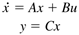
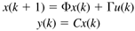
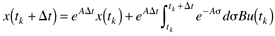
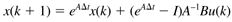
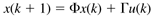
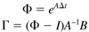
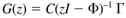

| [ Team LiB ] |
|
Appendix 4.2Discrete time models can be obtained directly from continuous time models, as summarized in this appendix. The MATLAB Control Toolbox can be used for these conversions, as shown in Module 4. Consider a continuous state space model of the following form (where we have assumed D = 0)  A similar discrete state space model has the following form  Assuming that the sample time is Dt, and that the input u is held constant between time tk and tk+1, (A4.1) can be integrated to yield  which has the solution (although the matrix exponential is not an intuitive concept, the computation is readily performed by MATLAB)  which is usually written in the following form  where  The stability of this discrete state space model is determined by the eigenvalues of F, which must have a magnitude less that 1.0 for stability. The discrete transfer function is, similar to the continuous time case  |
| [ Team LiB ] |
|